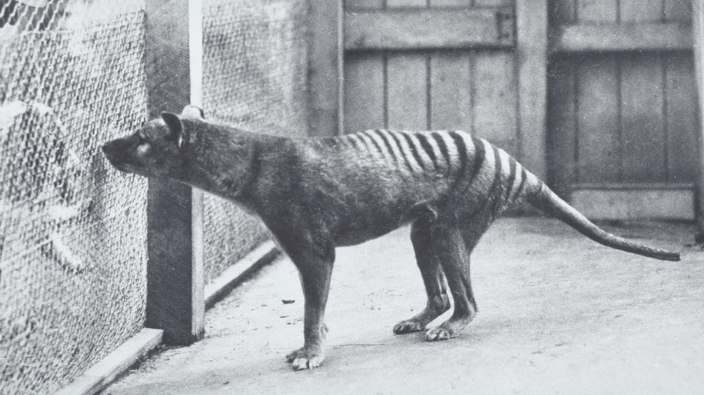
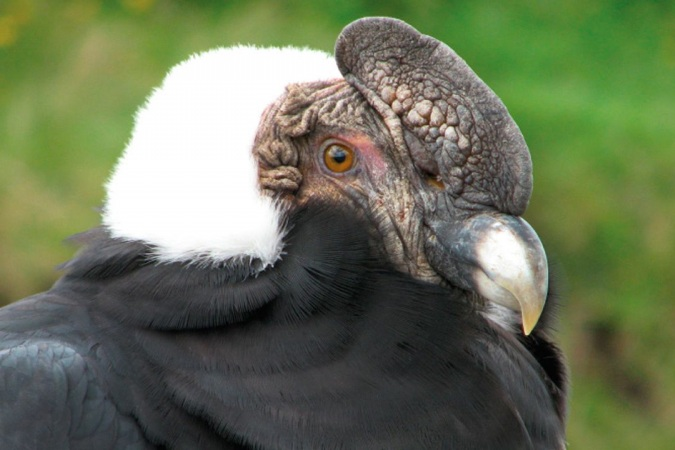

TOP 10 DE ANIMALES EXTINTOS.

La acción del hombre está comprometiendo la supervivencia de muchos animales en peligro de extinción que han visto como su población se ha reducido a números ínfimos. Lamentablemente, hay muchas especies por las que ya no se puede hacer nada, puesto que han desaparecido completamente y hoy en día sólo podemos conocerlas a través de fotografías.
Leer Más
ANIMALES EN PELIGRO DE EXTINCIÓN EN EL ECUADOR.

La destrucción de hábitats, la sobreexplotación, el tráfico ilegal de especies y la introducción de especies exóticas están entre las principales causas que ponen en riesgo a miles de especies en Ecuador. Entre los animales más conocidos están el cóndor andino, el águila harpía, el tapir o los albatros se han visto afectados.
Leer Más